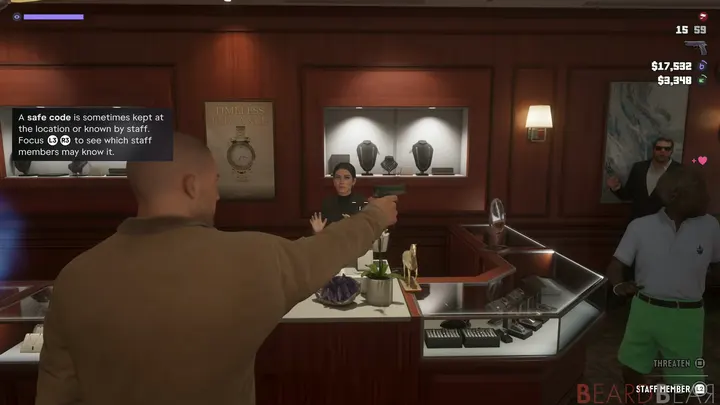
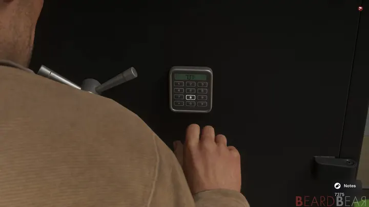
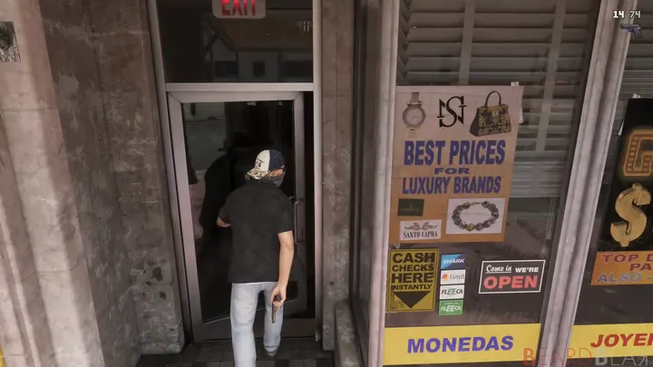
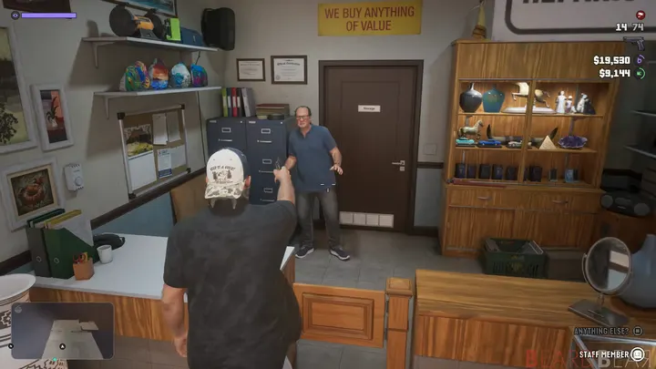
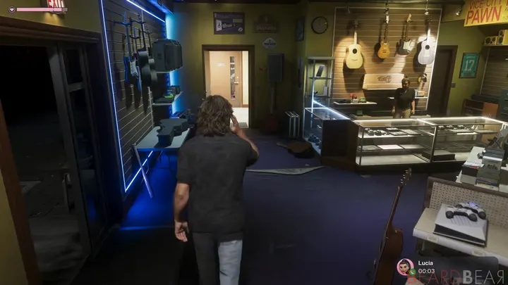

Необязательные задания главы 3 GTA 6: Ясмани, лаборатории и деньги
Опубликовано:

- Ювелирные заказы Ясмани — три магазина, $20 000 и отмычка Snap Gun. Коды сейфов ниже.
- Лаборатории Тайрона — по $2 000–2 500 за каждую, финал — $10 000 и трофей.
- Можно потерять: третью часть Dubious Provenance — если отказаться от часов Галифакса и пропустить его звонок.
Ювелирные заказы Ясмани (Yasmani’s Jewelry Jobs)
Открываются после миссии Boobie Time — можно за Лусию или за Джейсона. Ясмани заказывает три конкретные вещи из трёх магазинов. Всё остальное, что вынесете из витрин, — ваше.
| Магазин | Что взять | Код сейфа | Как войти |
|---|---|---|---|
| Casa de Empeño | цепочка с черепом буйвола | 1680 | через главный вход — чёрного хода нет. Записи с камер уничтожьте в щитке слева от сейфа |
| Richardson Jewelry | кольцо с бриллиантом | 6815 | чёрный ход — отмычкой Snap Gun; отключите сигнализацию на панели и сотрите записи |
| Donovan Banks & Co. | аметистовое ожерелье | 0104 | — |
- Начните с Casa de Empeño — самый маленький магазин и без чёрного хода. Snap Gun выдают после первой доставки, и с ней остальные два проще.
- Не забывайте про камеры: записи нужно уничтожить, иначе вас опознают.
- Готовые вещи сдавайте в гараже Ясмани — он забирает их и платит $20 000.




Лаборатории Тайрона
После сюжетной миссии Here, Kitty Kitty Тайрон начинает присылать адреса лабораторий Kitty Litter: найти дом с розовым дымом, войти, сжечь или взорвать оборудование. Где искать, коды и финальный штурм — на странице Тайрона.






Побочные цепочки главы 3
| Цепочка | С чего начать | Итог |
|---|---|---|
| Энди (только Лусия) | после Mami Knows Best и Car Services | −$5 000 на взнос, +$11 800 и трофей Road to Rehabilitation |
| Яго (Джейсон) | после Dealer’s Choice — сообщение от Мануэля | гонки, Race Against Yago ограничена по времени |
| Билли | Mall Rats — после Credit Check | $12 000 за налёт на торговый центр |
| Кайл | Buddy? — финал цепочки | $5 000 или ничего — зависит от выбора |
Что можно потерять
Dubious Provenance — если в первой части отказаться от часов и проигнорировать звонок Галифакса, задание закроется в конце главы 3. Для 100% оно не нужно, но там около $2 500 и машина ’32 Hustler.
Забегая вперёд: инкассаторы в главе 4
That’s Where The Money Is открывается после ограбления VCIA, задание даёт Ясмани. Встреча — в Cafe Orquidea в Ocean Beach. Нужно проследить за инкассаторским фургоном, затем за охранником до банка, переодеться, заминировать дверь и забрать меченые купюры — сумку можно передать напарнику: → и ○ (B). Сразу 4 звезды, чёрного хода нет: за руль садится напарник, машину меняете на парковке, а на себя надеваете кепку и очки. Награда — около $80 000 и трофей A Classic Blitz Play; дальше Ясмани начнёт присылать наводки на инкассаторов.
Частые вопросы
Какие коды сейфов в ювелирных заказах Ясмани?
Casa de Empeño — 1680, Richardson Jewelry — 6815, Donovan Banks & Co. — 0104.
Что дают ювелирные заказы Ясмани?
$20 000 за три вещи, отмычку Snap Gun после первой доставки и всё, что успеете вынести из витрин.
Когда открывается ограбление инкассаторов?
В главе 4, после ограбления VCIA: задание That’s Where The Money Is даёт около $80 000 и трофей A Classic Blitz Play.
Источники: PowerPyx — «Yasmani’s Jewelry Jobs», «That’s Where The Money Is», «Dubious Provenance», «All Kitty Litter Lab Locations», «Climbing the Cellerichain», «Join a Street Race», «Mall Rats», «Buddy?», 19.11.2026; PC Gamer, «GTA 6 mission list», 19.11.2026.